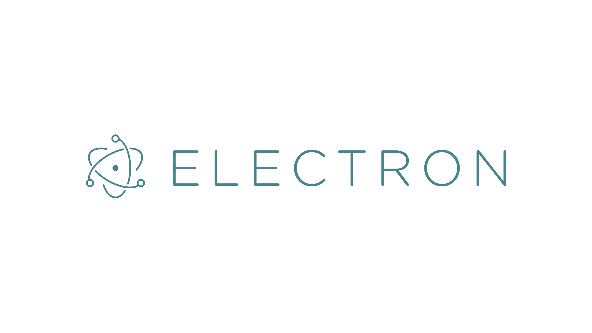

Electron-OFP
生成一个Electron项目的可执行文件，仅单文件。用于防止因用户误操作造成的文件丢失。
Web 开发工具
生成一个Electron项目的可执行文件，仅单文件。用于防止因用户误操作造成的文件丢失。
Web 开发工具

Sword Engine
2D桌面游戏框架，可使用J/TS开发，对于Electron的二次封装与游戏对象管理框架。
Node.js 游戏应用支持库
2D桌面游戏框架，可使用J/TS开发，对于Electron的二次封装与游戏对象管理框架。
Node.js 游戏应用支持库

泰坦站
非个人项目，最终管理权属于SolariIX。
Unity 游戏
非个人项目，最终管理权属于SolariIX。
Unity 游戏